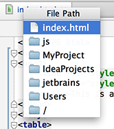

Ctrl+Click (on Windows) or Cmd+Click (on MacOS) a tab in the editor to navigate to any part of the file path. Select the necessary element in the drop-down, and the corresponding file path opens in an external browser (e.g., in the Explorer, if your OS is Windows).
